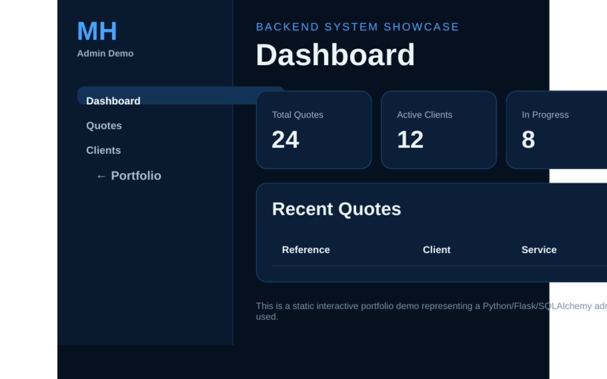

The problem
Business quote requests require more than a contact form: administrators need searchable records, statuses, customer context and a clear operational dashboard.
An interactive static showcase representing a larger Flask/SQLAlchemy administration system for customer quotations and business workflows.

Business quote requests require more than a contact form: administrators need searchable records, statuses, customer context and a clear operational dashboard.
The original backend work uses Flask and SQLAlchemy concepts for authentication, quote records, customer data and administrative workflows. This GitHub Pages version recreates the main interactions without exposing real data or requiring a Python server.
GitHub Pages cannot execute Flask or SQLite, so I created a front-end showcase that demonstrates the workflow while clearly labeling it as a static representation.
The project strengthened my understanding of backend routing, data models, CRUD administration and designing tools for operational users.